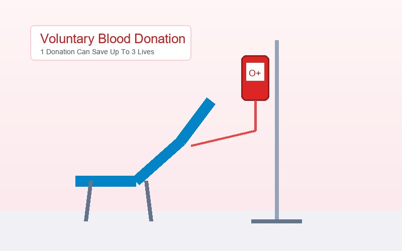
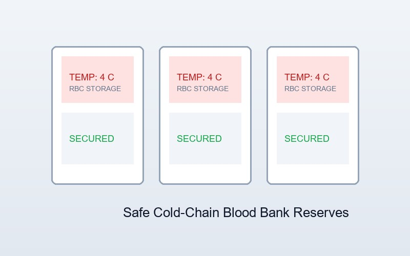
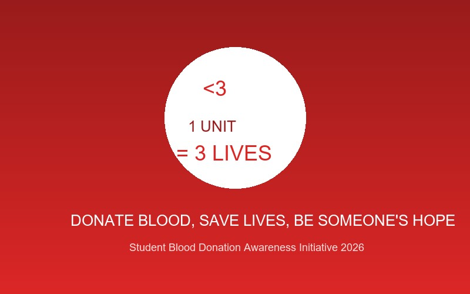

Important Tips for Blood Donors
Whether you are donating blood for the very first time or are a seasoned multi-gallon milestone donor, taking the proper preparatory steps ensures your donation session is smooth, energizing, and comfortable. Below are comprehensive guidelines curated by certified transfusion nurses to optimize your pre- and post-donation wellness.

Interactive Donation Care & Clinic Showcase
Click the navigation dots below to explore our clinical stations and voluntary donor impact:




1. Check Your Eligibility
Before arriving at the donor clinic, take a brief moment to review fundamental eligibility criteria. You must be in general good health, at least 18 years of age (16-17 with parental authorization in some jurisdictions), and weigh at least 50 kg (110 lbs). If you are currently recovering from an acute fever, tooth extraction, or are on antibiotics, defer your visit until you have fully healed.
2. Eat Healthy Before Donation
Never donate blood on an empty stomach. Enjoy a nutritious, balanced meal 2 to 3 hours prior to your scheduled phlebotomy appointment.
- Focus on Iron-Rich Foods: Spinach, beans, lentils, lean poultry, iron-fortified cereals, raisins, and citrus fruits (vitamin C assists in non-heme iron absorption).
- Avoid High-Fat Meals: Avoid greasy foods like burgers, fries, or deep-fried pastries right before donating, as excess lipids in your blood plasma can interfere with infectious disease screening tests.
3. Drink Enough Water
Hydration is the single most effective way to prevent lightheadedness and fainting. Drink an extra 500 mL (approximately 16 ounces) of plain water or natural fruit juice within the hour leading up to your donation. Maintaining robust fluid volume makes your veins plump and easily accessible, ensuring a swift and completely comfortable needle draw.
4. Get Proper Sleep
Ensure you obtain a restorative 7 to 8 hours of uninterrupted sleep on the night preceding your donation. Being well-rested stabilizes your autonomic nervous system, keeps your baseline blood pressure in a normal zone, and accelerates your post-donation recovery.
5. Carry Valid Identification
Medical regulations require verified donor identity documentation prior to accessing blood bags. Ensure your wallet contains:
- A government-issued photo ID card (Driver’s License, Passport, or National ID).
- Your official Blood Donor Card (if you have donated previously).
- A list of any regular prescription medications you are currently taking.
Donor Packing & Preparation Checklist
Before You Leave Home, Make Sure You Have:
- ✔ Valid Identification: Government photo ID or student card.
- ✔ Donor Registration Details: Appointment booking confirmation if pre-registered online.
- ✔ Comfortable Clothing: Wear shirts with loose sleeves that can easily be rolled up past the elbow.
- ✔ Relevant Medical Information: Names of current prescription medications.
- ✔ Blood Centre Instructions: Strict adherence to food and hydration advisories.
6. What to Expect During Donation
The phlebotomy procedure is straightforward and meticulously hygienic:
- Sterile Cleansing: The nurse swabs your arm crease with an antiseptic chlorhexidine solution for 30 seconds.
- Painless Insertion: You will feel a minor, momentary pinch as the sterile single-use needle enters the vein.
- Relaxation: You gently squeeze a soft foam stress ball every 5 seconds to maintain steady capillary circulation.
- Quick Completion: The automated scale gently rocks the collection bag, beeping smoothly when 450 mL is filled (takes roughly 8 to 10 minutes).
7. Take Rest After Donation
Once the needle is withdrawn, a sterile gauze pad and adhesive bandage are placed over the puncture site. Follow these post-donation care rules:
- Relax for 15 Minutes: Sit in the refreshment lounge, drink a glass of fruit juice, and enjoy cookies or savory crackers before driving.
- Keep Bandage On: Leave the protective bandage in place for at least 4 to 6 hours to prevent capillary oozing.
- Avoid Heavy Lifting: Refrain from strenuous gym workouts, heavy weightlifting, or vigorous arm exertion for the rest of the day.
- Stay Hydrated: Drink an extra 4 to 6 glasses of liquids over the subsequent 24 hours.
8. Maintain a Healthy Lifestyle
Being a regular, dependable blood donor is a lifelong commitment to community health and personal well-being. By maintaining balanced nutrition rich in iron and leafy vegetables, engaging in moderate physical activity, avoiding tobacco, and scheduling routine whole-blood donations every 8 weeks, you become an irreplaceable pillar of your community’s healthcare defense.
🔊 Donor Relaxation & Calming Audio Guide
Listen to our soothing pre-donation audio guide designed to help first-time donors relax, practice deep rhythmic breathing, and enjoy a peaceful donation experience.
📄 Official Blood Donor Handbook & Clinical Guide
Download our official printable PDF handbook containing pre-donation dietary checklists, clinical deferral tables, and statutory voluntary donor rights.